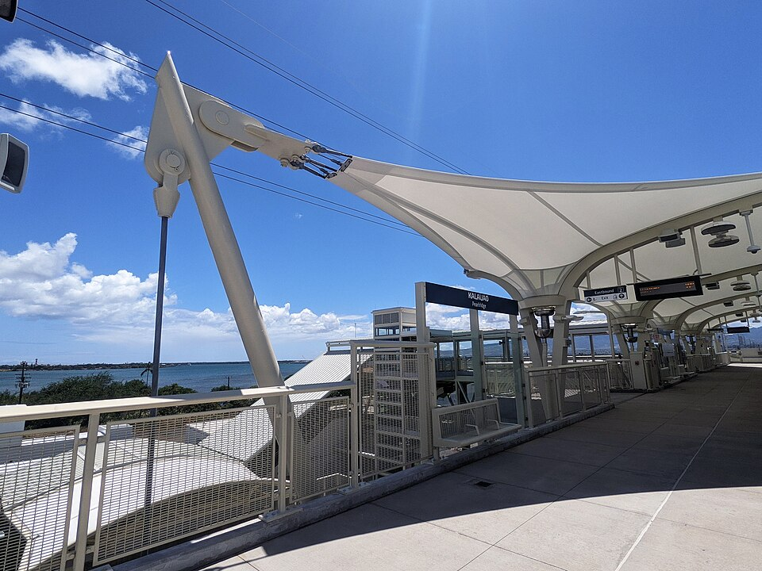

Kalauao Rail Station
Place: Kalauao Rail Station, Pearlridge, ʻAiea, Oʻahu
Type: Skyline rail station / transit hub
Namesake: Kalauao (“the multitude of clouds”), the historic ahupuaʻa whose freshwater springs supported agriculture along the shores of Puʻuloa (Pearl Harbor)
Story it tells: How a modern rail station preserves the name of a landscape shaped by clouds, freshwater springs, loʻi kalo, and agriculture before highways, shopping centers, and suburban development transformed the area.

Kalauao Rail Station, also known as Pearlridge Station, stands above Kamehameha Highway near Kaonohi Street in ʻAiea, surrounded today by shopping centers, highways, businesses, and residential neighborhoods. The elevated station opened on June 30, 2023, as part of Skyline's first operating segment. Its name belongs to a much older landscape defined by the Koʻolau Mountains, clouds, freshwater, and the shores of Puʻuloa.
Kalauao is commonly translated as “the multitude of clouds.” The name describes clouds gathering against the nearby Koʻolau Mountains which produce significant rain that feeds streams, springs, and groundwater emerging across the lower lands of Kalauao. The abundance of water made the ahupuaʻa productive and connected the mountains above with the wetlands and protected waters of Puʻuloa, or Pearl Harbor, below.
Native Hawaiians used this freshwater to cultivate extensive loʻi kalo. Springs and streams were directed through taro patches before continuing toward coastal wetlands and fishponds. The same water that began as clouds smashing into the Koʻolau mountains would eventually support farming, fishing, and communities across Kalauao. The “multitude of clouds” was part of the environmental system that helped build up and support the community.
Kalauao was also connected to the political history of Oʻahu. The area known as Kūkiʻiahu is associated with Chiefess Kalaimanuia, an aliʻi who ruled approximately in the late 15th century and is remembered for a long and comparatively peaceful period of rule on Oʻahu. Many generations later, the same landscape became the setting for one of the violent conflicts that preceded Kamehameha I's conquest of the island.
In 1794, Kāʻeokūlani of Kauaʻi and Kalanikūpule of Oʻahu fought the Battle of Kūkiʻiahu in the Kalauao-ʻAiea area. The conflict emerged from the political struggle that followed the death of Maui ruler Kahekili II. Kāʻeokūlani (Kahekili's half-brother) was killed during the fighting, leaving Kalanikūpule (Kahekili's son) in control of Oʻahu but severely weakened only months before Kamehameha's forces invaded the island in 1795.
During the nineteenth century, agriculture remained central to Kalauao, although the crops and people working the land changed. Chinese and other immigrant farmers adapted portions of the existing agricultural network for rice cultivation. Fields spread across the lowlands and the water-intensive crop prospered.
Commercial sugar cultivation eventually took over much of the surrounding region. Plantation fields, irrigation systems, roads, and railroads retooled the landscape around ʻAiea and Kalauao. The waters that had fed earlier loʻi and wetlands were incorporated into the sugar plantation economy.
One remarkable piece of that agricultural landscape survives immediately beside modern Pearlridge. Sumida Farm began growing watercress in the Kalauao wetlands during the early twentieth century. Millions of gallons of cool artesian water flow through the property each day, creating conditions particularly suited to watercress cultivation.
As ʻAiea and Pearl City urbanized, the contrast surrounding the farm became increasingly dramatic. Rice fields and plantation lands disappeared beneath homes, highways, parking lots, and commercial development. Pearlridge Center opened in the 1970s beside the remaining wetlands, placing one of Hawaiʻi's largest shopping centers directly alongside an active farm.
Development consumed agriculture, however, the springs beneath the watercress fields continued flowing and Sumida Farm survived the transition. The constant supply of freshwater made the property difficult to develop. Efforts by the Sumida family to preserve the operation allowed a small portion of Kalauao's agricultural landscape to remain amid the urban landscape.
The crops have changed from kalo to rice to sugar and watercress, but freshwater remains the common thread connecting these different periods of Kalauao's history.
The name itself returned to greater public visibility through Honolulu's rail project. During planning, the station was commonly identified with Pearlridge, the modern commercial landmark that most riders connect to the area and are probably traveling to or from. The Hawaiian Station Naming Working Group prioritized a name that connected traditional geography surrounding the rail corridor and recommended Kalauao.
When Kalauao Rail Station opened in 2023, the old name appeared on rail maps, station signs, and announcements used by thousands of passengers. For many riders, it was likely the first time they had seen or heard the name Kalauao.
Today, little of historic Kalauao resembles the agricultural landscape that once surrounded Puʻuloa. Highways cross the former fields, suburban neighborhoods climb toward the mountains, and commercial development dominates the lower lands. The relationship behind the name happens almost everyday, whether residents noticed it or not. Clouds gather against the Koʻolau, rain enters the watershed, and freshwater still emerges from the ground beside Pearlridge.
Kalauao preserves that relationship between clouds, mountains, and water. From loʻi kalo and rice fields to the surviving watercress farm and a twenty-first-century rail station, the landscape's story has been repeatedly rewritten while the thread of the story, the water beneath the land, continues to shape the place.